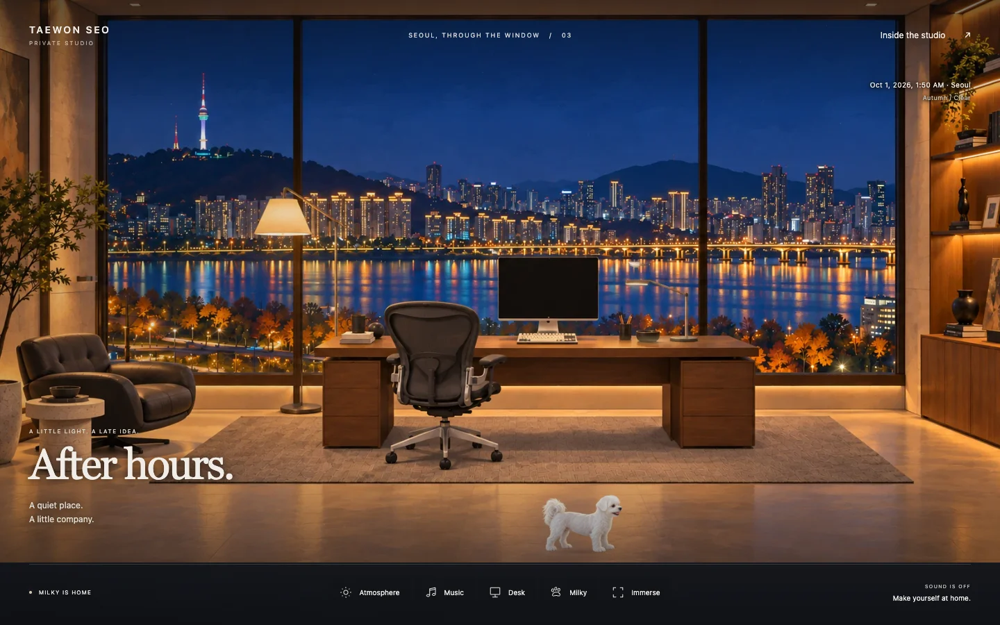
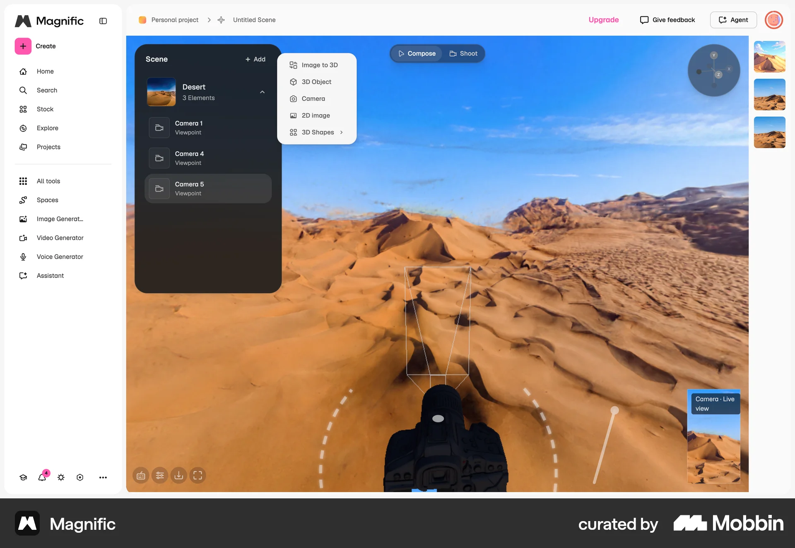
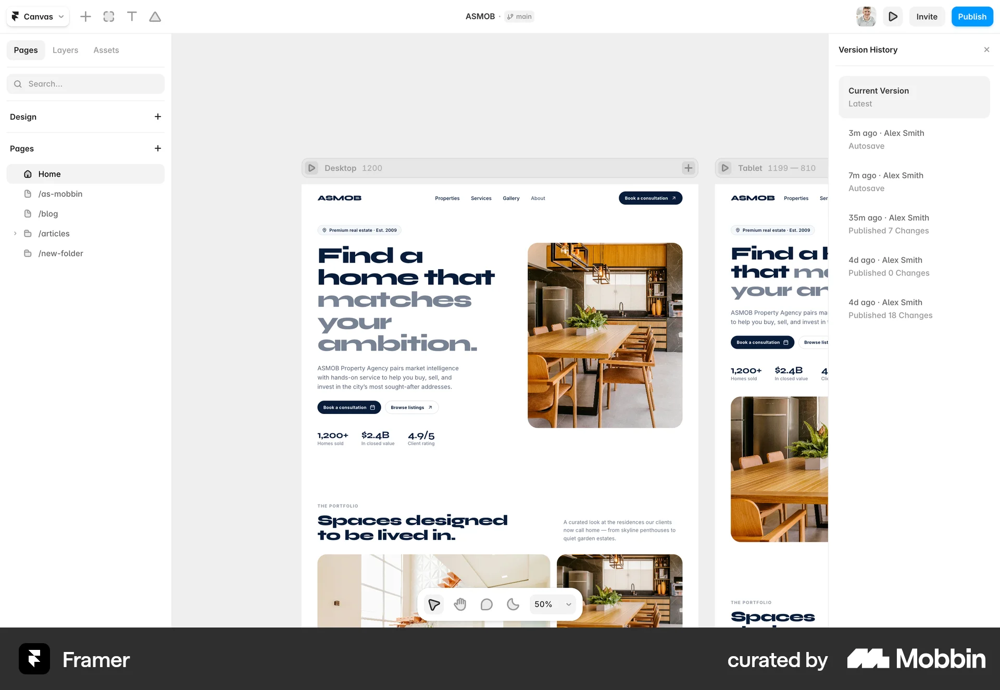
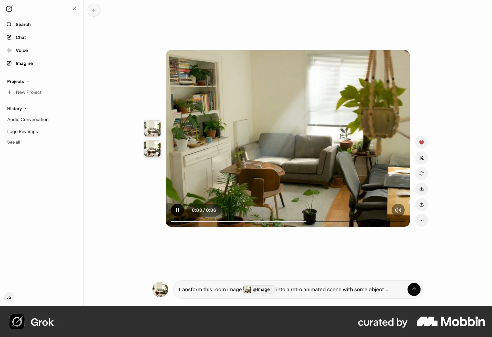

← 스튜디오로TAEWON SEO / DESIGN RECORD / 2026.10.01
서울을 정면으로.
책상 너머의 사계절.
창문이 옆으로 난 기존 구도를 정면의 큰 통창으로 바꾸고, 책상이 창밖을 향하게 배치했습니다. 한강과 남산타워, 월넛 책상과 검은 의자, 양옆 라운지와 선반이 한 화면에 들어옵니다. 칠판은 제거했습니다.
 이전 배포 · 7dd1446 · 백업 보존
이전 배포 · 7dd1446 · 백업 보존
새 공간 · 전망 중심 프레이밍 · 서울 · HHKB · Studio Display · Aeron구도 비교
사계절 × 다섯 시간대
봄 벚꽃, 여름 녹음, 가을 단풍, 겨울의 나뭇가지와 눈 덮인 강변을 각각 제작했습니다. 같은 계절에서도 아침·정오·오후·저녁·밤의 빛이 달라집니다.
이 페이지는 배경 원화 비교입니다. 비·눈·안개·창문 물방울·빛 반사는 실제 스튜디오에서 확인할 수 있습니다. 흐리거나 비가 오는 낮에는 해당 계절의 부드러운 정오 빛을 사용합니다.
반영한 방향
최종 피드백에 따라 화면 하단 바닥 약 15%를 줄였습니다. 허먼밀러 Aeron 메쉬 의자, Flos Kelvin Edge 형태의 정제된 책상 조명, 사용자가 제공한 은색 관절형 패브릭 갓 플로어 램프를 추가했습니다.
| 항목 | 반영 |
|---|
| 사용자 제공 이미지 2장 | 푸른 야경과 따뜻한 조명, 넓은 창, 집중할 수 있는 작업 공간. 이후 지시에 따라 코너 창과 칠판은 제외했습니다. 개인 원본 이미지는 배포에 포함하지 않았습니다. |
| 워크스테이션 | Apple Studio Display의 실버 스탠드와 검은 화면, HHKB Professional의 작은 60키 배열을 기준으로 했습니다. |
| 밀키 | 기존 캐릭터와 빨간 공을 그대로 사용하고 이동할 바닥 영역을 새 가구 위치에 맞췄습니다. |
| 자동 분위기 | 기기 시각을 따르며 위치 허용 시 방문자의 계절·날씨·해 뜨는 시각을 반영합니다. 서울 풍경은 일러스트입니다. |
확인한 디자인 자료
Studio의 web-theme/vercel 중립 색상 토큰을 확인했습니다. 개인 사이트의 이름과 정체성은 유지합니다. 아래 Mobbin 세 화면은 이번 세션의 MCP로 검색하고 실제 이미지를 확인했습니다.

Magnific — 큰 장면과 가장자리 도구. 실내 설계 앱으로 해석하지 않았습니다.
Framer — 나란히 비교하는 화면, 모바일 확인 방식.
Grok — 장면과 도구 분리. 복잡한 실내 장식은 채택하지 않았습니다.21st.dev MCP에서 Image Comparison · 1466과 Side By Side Slide · 18095의 컴포넌트 및 데모 소스를 확인했습니다. 비교 방식만 참고하고, 터치와 키보드를 지원하는 기본 슬라이더로 직접 구현했습니다. hover 전용 이동과 추가 React 의존성은 채택하지 않았습니다.
Studio 프로젝트 연결이 없어 동기화는 보류되어 있습니다. MCP 자료와 보고서는 이 저장소에 보존했으며, 연결된 Studio 게이트 통과로 표시하지 않았습니다. 검색 기록·자료 ID·결정 보기